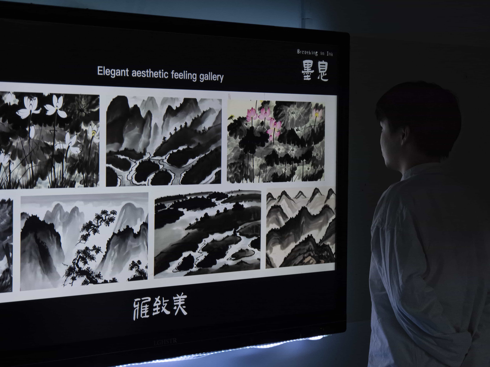
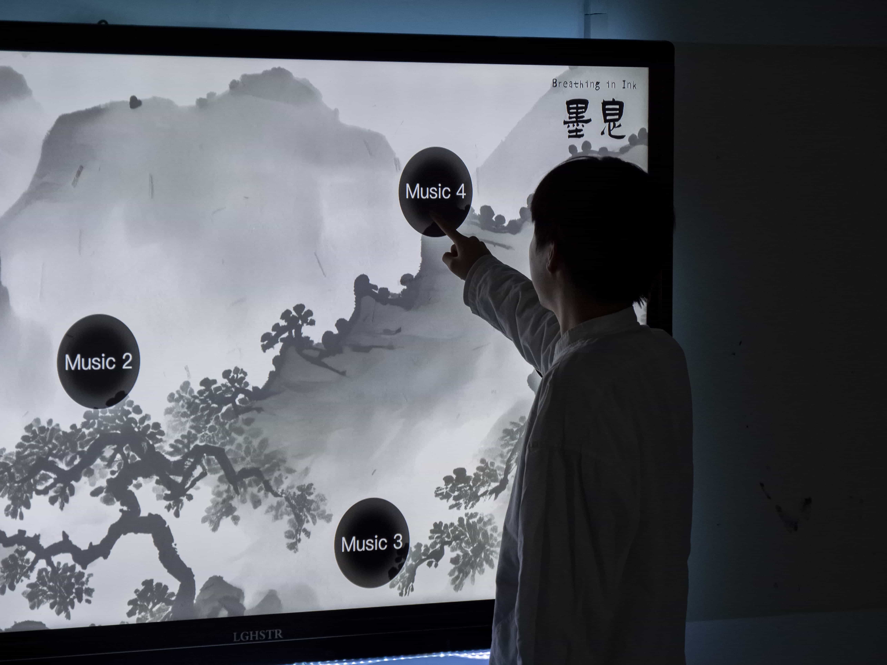
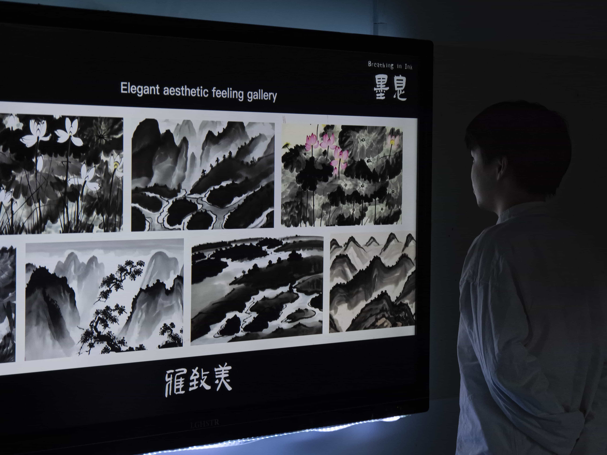
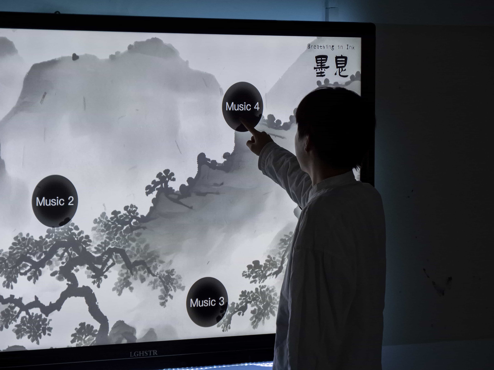

Breathing In Ink
Linyu Peng Zhenglang Jiang Yaxin Wan Lintao Lu
"Breathing in Ink" interactive installation, leveraging the LLM, transforms user's physiological data into elements of Chinese ink painting. This AI-driven system reflects the user’s vitality in personalized ink paintings. Users select Guqin music for meditation, absorbing the Chinese aesthetic atmosphere, thus emotionally and physically synchronizing with the system. The installation captures and processes physiological signals to create Chinese paintings, integrating the user's vitality.
"Qi Yun Sheng Dong" (Rhythmic vitality) represents the highest realm in traditional Chinese painting, embodying the philosophical thoughts on life, nature, and the universe. Inspired by "Qi Yun" as a vital representation of life in Chinese culture, we chose to collect users' breathing and pulse data, mapping the analytical results onto the compositional elements of ink paintings in a manner consistent with Chinese aesthetic cognition.
To enhance user experience, we incorporated the five major aesthetic categories of Chinese painting: Qishi, Shengji, Yazhi, Qingyou, Xiaose. Through music, the installation introduces them to the user, stimulating imagination and surprise during the immersive experience.
However, some LLMs like DALL-E, Stable Diffusion, and midjourney struggle to capture the essence of ink painting techniques. Their generated images often fail to depict the texture of concentrated ink, simplifying ink application as mere black-and-white transitions, and their object placement and use of negative space differ from traditional Chinese paradigms, leading to a deviation from the principles of traditional Chinese ink painting aesthetics.
To enable AI to better understand the painting methods, evaluation criteria, and essence of Chinese ink painting, we defined specific label dimensions based on the unique features of ink painting, its historical significance in “Rhythmic vitality”, and the dialectical relationship between the virtual and the real in digitalized ink paintings. We then segmented, denoised, and processed over 500 images from the aesthetic database with super-resolution techniques, excluding low-quality training sets with significant artifacts. Ultimately, we fine-tuned a model based on Stable Diffusion XL using lower-order adaptation techniques, creating the Lora model for Chinese ink painting categorized by aesthetics.
User data from two sensors include Respiratory Depth and Amplitude, among others. These correspond to nine descriptive dimensions in painting, like subject object and line weight. Data ranges are categorized into high, medium, and low, each triggering different prompt sets. The device changes prompt probabilities based on these values; for example, in a Qishi beauty, larger respiratory amplitudes might prompt mountains as the primary subject. Physiological data is converted into prompts, generating images reflecting the user's emotional state. This aims to enhance AI-generated image interpretability, aligning with user expectations and cognition, yielding richer and varied outputs.
"Breathing in Ink" replicates traditional Chinese meditation and Qi cultivation scenes, facilitating artistic creation through personal vitality. This interaction is intended to deepen understanding of deep meanings and the concept of “Rhythmic vitality”, highlighting life's significance in art. The project also explores deeper machine-human conversational modes. We aim to transcend verbal concepts and grasp artistic conceptions, enabling LLMs to understand the essence and methods of ink painting, creating works more aligned with traditional Chinese aesthetics.